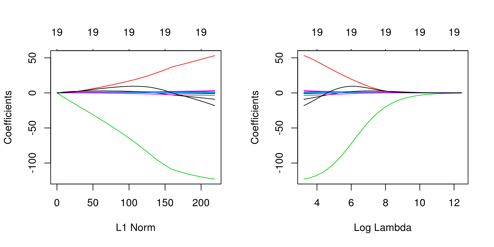
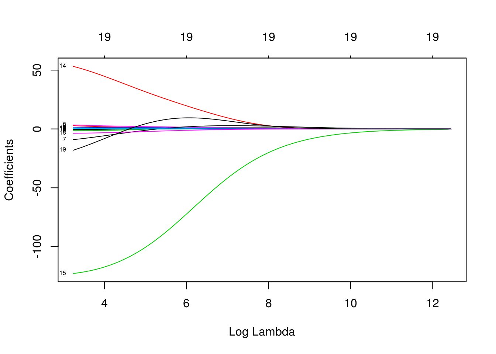
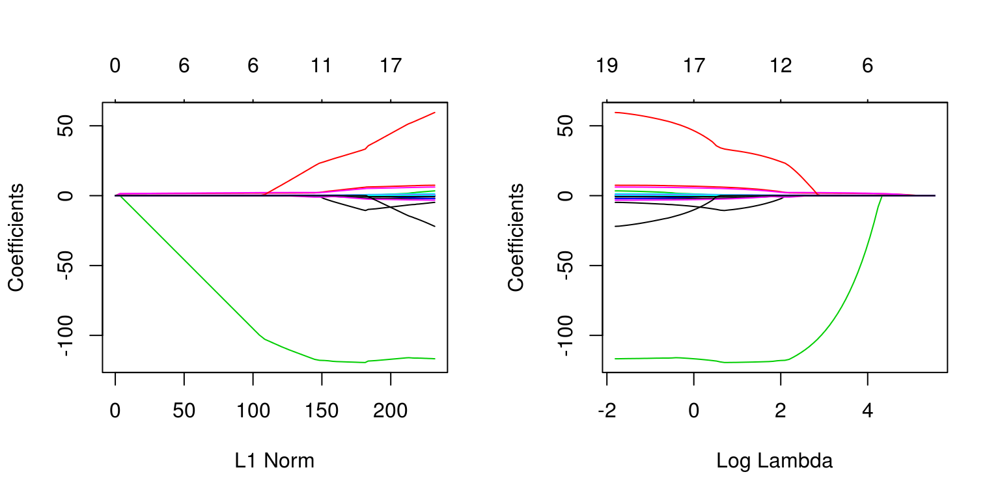
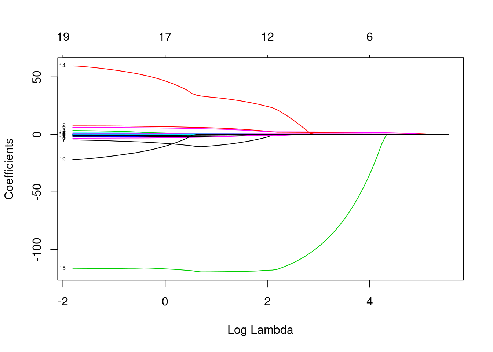
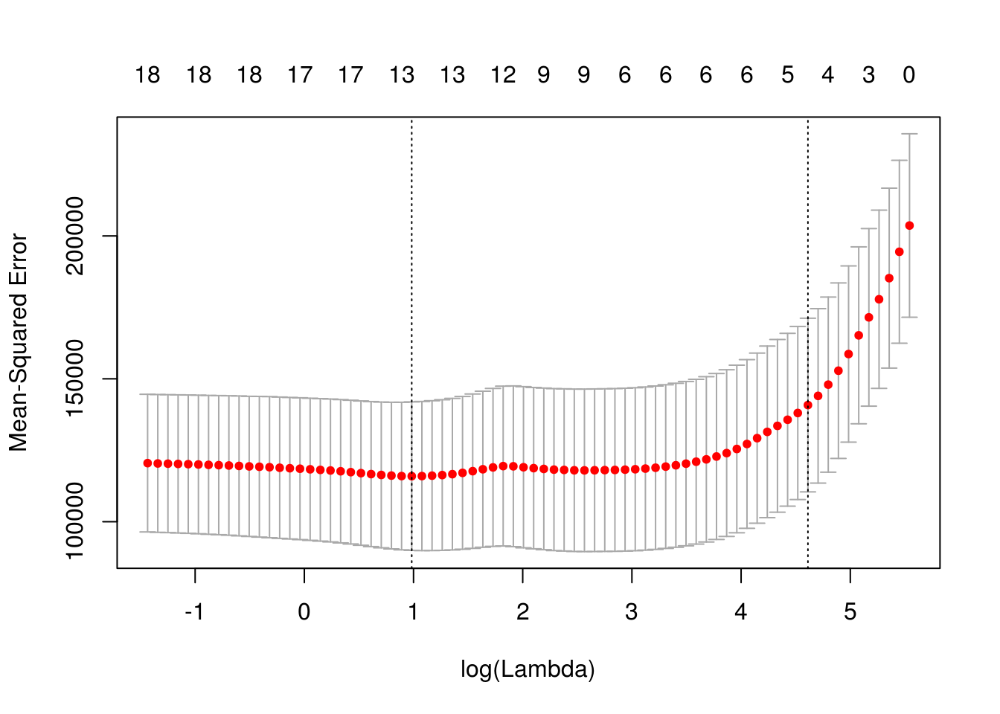
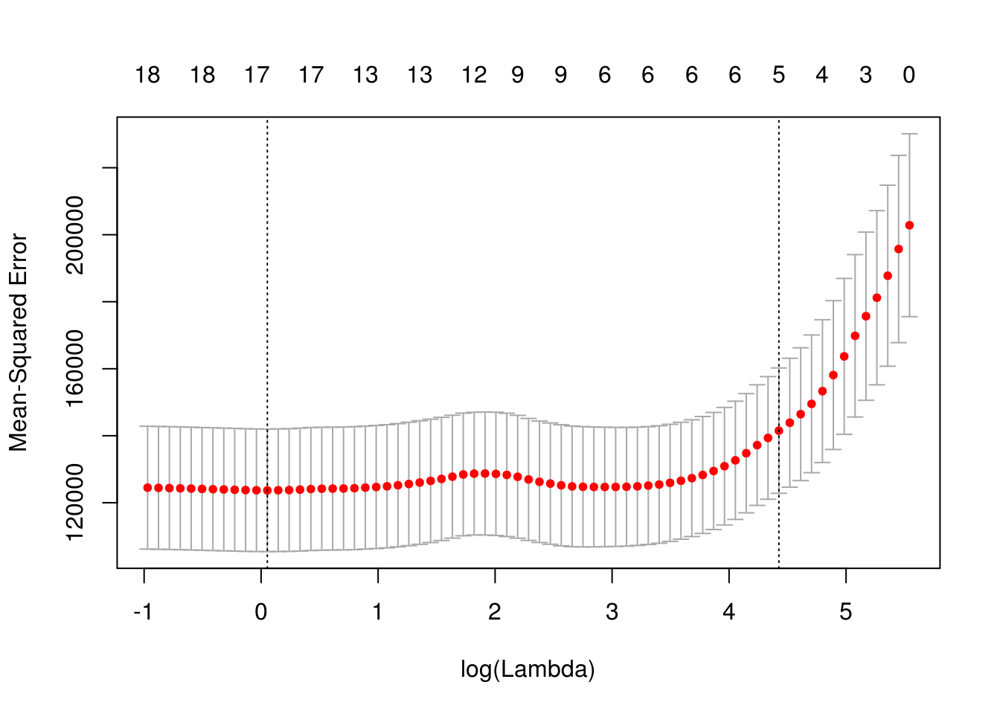
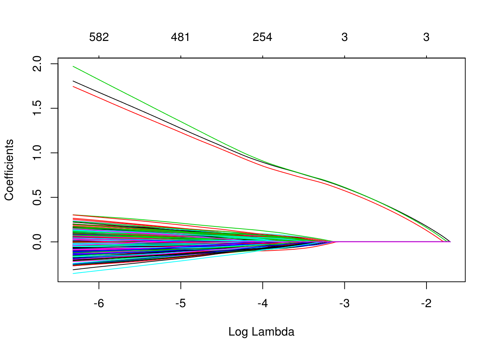

Chapter 24 Regularization
TODO: Introduce regularization as a concept.
We will use the Hitters dataset from the ISLR package to explore two shrinkage methods: ridge and lasso. These are otherwise known as penalized regression methods.
data(Hitters, package = "ISLR")This dataset has some missing data in the response Salaray. We use the na.omit() function the clean the dataset.
sum(is.na(Hitters))## [1] 59sum(is.na(Hitters$Salary))## [1] 59Hitters = na.omit(Hitters)
sum(is.na(Hitters))## [1] 0The predictors variables are offensive and defensive statistics for a number of baseball players.
names(Hitters)## [1] "AtBat" "Hits" "HmRun" "Runs" "RBI"
## [6] "Walks" "Years" "CAtBat" "CHits" "CHmRun"
## [11] "CRuns" "CRBI" "CWalks" "League" "Division"
## [16] "PutOuts" "Assists" "Errors" "Salary" "NewLeague"We use the glmnet() and cv.glmnet() functions in the glmnet package to fit penalized regressions.
# this is a temporary workaround for an issue with glmnet, Matrix, and R version 3.3.3
# see here: http://stackoverflow.com/questions/43282720/r-error-in-validobject-object-when-running-as-script-but-not-in-console
library(methods)library(glmnet)The glmnet function does not allow the use of model formulas, so we setup the data for ease of use with glmnet.
X = model.matrix(Salary ~ ., Hitters)[, -1]
y = Hitters$SalaryFirst, we fit a regular linear regression, and note the size of the predictors’ coefficients, and predictors’ coefficients squared. (The two penalties we will use.)
fit = lm(Salary ~ ., Hitters)
coef(fit)## (Intercept) AtBat Hits HmRun Runs
## 163.1035878 -1.9798729 7.5007675 4.3308829 -2.3762100
## RBI Walks Years CAtBat CHits
## -1.0449620 6.2312863 -3.4890543 -0.1713405 0.1339910
## CHmRun CRuns CRBI CWalks LeagueN
## -0.1728611 1.4543049 0.8077088 -0.8115709 62.5994230
## DivisionW PutOuts Assists Errors NewLeagueN
## -116.8492456 0.2818925 0.3710692 -3.3607605 -24.7623251sum(abs(coef(fit)[-1]))## [1] 238.7295sum(coef(fit)[-1] ^ 2)## [1] 18337.324.1 Ridge Regression
We first illustrate ridge regression, which can be fit using glmnet() with alpha = 0 and seeks to minimize
\[ \sum_{i=1}^{n} \left( y_i - \beta_0 - \sum_{j=1}^{p} \beta_j x_{ij} \right) ^ 2 + \lambda \sum_{j=1}^{p} \beta_j^2 . \]
Notice that the intercept is not penalized. Also, note that that ridge regression is not scale invariant like the usual unpenalized regression. Thankfully, glmnet() takes care of this internally. It automatically standardizes input for fitting, then reports fitted coefficient using the original scale.
The two plots illustrate how much the coefficients are penalized for different values of \(\lambda\). Notice none of the coefficients are forced to be zero.
fit_ridge = glmnet(X, y, alpha = 0)
plot(fit_ridge)
plot(fit_ridge, xvar = "lambda", label = TRUE)
dim(coef(fit_ridge))## [1] 20 100We use cross-validation to select a good \(\lambda\) value. The cv.glmnet()function uses 10 folds by default. The plot illustrates the MSE for the \(\lambda\)s considered. Two lines are drawn. The first is the \(\lambda\) that gives the smallest MSE. The second is the \(\lambda\) that gives an MSE within one standard error of the smallest.
fit_ridge_cv = cv.glmnet(X, y, alpha = 0)
plot(fit_ridge_cv)The cv.glmnet() function returns several details of the fit for both \(\lambda\) values in the plot. Notice the penalty terms are smaller than the full linear regression. (As we would expect.)
coef(fit_ridge_cv)## 20 x 1 sparse Matrix of class "dgCMatrix"
## 1
## (Intercept) 213.066443434
## AtBat 0.090095728
## Hits 0.371252756
## HmRun 1.180126956
## Runs 0.596298287
## RBI 0.594502390
## Walks 0.772525466
## Years 2.473494238
## CAtBat 0.007597952
## CHits 0.029272172
## CHmRun 0.217335716
## CRuns 0.058705097
## CRBI 0.060722036
## CWalks 0.058698830
## LeagueN 3.276567828
## DivisionW -21.889942619
## PutOuts 0.052667119
## Assists 0.007463678
## Errors -0.145121336
## NewLeagueN 2.972759126coef(fit_ridge_cv, s = "lambda.min")## 20 x 1 sparse Matrix of class "dgCMatrix"
## 1
## (Intercept) 71.78758429
## AtBat -0.58269657
## Hits 2.51715272
## HmRun -1.39973428
## Runs 1.07259572
## RBI 0.74825248
## Walks 3.17950553
## Years -8.35976899
## CAtBat 0.00133718
## CHits 0.12772556
## CHmRun 0.68074413
## CRuns 0.27080732
## CRBI 0.24581306
## CWalks -0.24120197
## LeagueN 51.41107146
## DivisionW -121.93563378
## PutOuts 0.26073685
## Assists 0.15595798
## Errors -3.59749877
## NewLeagueN -15.89754187sum(coef(fit_ridge_cv, s = "lambda.min")[-1] ^ 2) # penalty term for lambda minimum## [1] 17868.18coef(fit_ridge_cv, s = "lambda.1se")## 20 x 1 sparse Matrix of class "dgCMatrix"
## 1
## (Intercept) 213.066443434
## AtBat 0.090095728
## Hits 0.371252756
## HmRun 1.180126956
## Runs 0.596298287
## RBI 0.594502390
## Walks 0.772525466
## Years 2.473494238
## CAtBat 0.007597952
## CHits 0.029272172
## CHmRun 0.217335716
## CRuns 0.058705097
## CRBI 0.060722036
## CWalks 0.058698830
## LeagueN 3.276567828
## DivisionW -21.889942619
## PutOuts 0.052667119
## Assists 0.007463678
## Errors -0.145121336
## NewLeagueN 2.972759126sum(coef(fit_ridge_cv, s = "lambda.1se")[-1] ^ 2) # penalty term for lambda one SE## [1] 507.788#predict(fit_ridge_cv, X, s = "lambda.min")
#predict(fit_ridge_cv, X)
mean((y - predict(fit_ridge_cv, X)) ^ 2) # "train error"## [1] 132355.6sqrt(fit_ridge_cv$cvm) # CV-RMSEs## [1] 452.8167 451.9123 450.5270 450.2644 449.9774 449.6637 449.3212
## [8] 448.9471 448.5390 448.0939 447.6088 447.0804 446.5052 445.8797
## [15] 445.1999 444.4618 443.6613 442.7941 441.8558 440.8417 439.7474
## [22] 438.5683 437.2999 435.9380 434.4784 432.9175 431.2520 429.4793
## [29] 427.5973 425.6051 423.5023 421.2902 418.9709 416.5481 414.0270
## [36] 411.4145 408.7189 405.9500 403.1193 400.2398 397.3257 394.3924
## [43] 391.4558 388.5327 385.6395 382.7926 380.0079 377.2998 374.6820
## [50] 372.1656 369.7609 367.4753 365.3134 363.2810 361.3789 359.6067
## [57] 357.9625 356.4431 355.0438 353.7591 352.5828 351.5083 350.5286
## [64] 349.6341 348.8239 348.0899 347.4286 346.8250 346.2733 345.7796
## [71] 345.3342 344.9260 344.5571 344.2301 343.9210 343.6446 343.3930
## [78] 343.1536 342.9343 342.7318 342.5383 342.3526 342.1741 341.9986
## [85] 341.8285 341.6585 341.4858 341.3148 341.1415 340.9640 340.7851
## [92] 340.6021 340.4174 340.2260 340.0363 339.8411 339.6462 339.4520sqrt(fit_ridge_cv$cvm[fit_ridge_cv$lambda == fit_ridge_cv$lambda.min]) # CV-RMSE minimum## [1] 339.452sqrt(fit_ridge_cv$cvm[fit_ridge_cv$lambda == fit_ridge_cv$lambda.1se]) # CV-RMSE one SE## [1] 372.165624.2 Lasso
We now illustrate lasso, which can be fit using glmnet() with alpha = 1 and seeks to minimize
\[ \sum_{i=1}^{n} \left( y_i - \beta_0 - \sum_{j=1}^{p} \beta_j x_{ij} \right) ^ 2 + \lambda \sum_{j=1}^{p} |\beta_j| . \]
Like ridge, lasso is not scale invariant.
The two plots illustrate how much the coefficients are penalized for different values of \(\lambda\). Notice some of the coefficients are forced to be zero.
fit_lasso = glmnet(X, y, alpha = 1)
plot(fit_lasso)
plot(fit_lasso, xvar = "lambda", label = TRUE)
dim(coef(fit_lasso))## [1] 20 80Again, to actually pick a \(\lambda\), we will use cross-validation. The plot is similar to the ridge plot. Notice along the top is the number of features in the model. (Which changed in this plot.)
fit_lasso_cv = cv.glmnet(X, y, alpha = 1)
plot(fit_lasso_cv)
cv.glmnet() returns several details of the fit for both \(\lambda\) values in the plot. Notice the penalty terms are again smaller than the full linear regression. (As we would expect.) Some coefficients are 0.
coef(fit_lasso_cv)## 20 x 1 sparse Matrix of class "dgCMatrix"
## 1
## (Intercept) 2.220974e+02
## AtBat .
## Hits 1.129009e+00
## HmRun .
## Runs .
## RBI .
## Walks 1.172062e+00
## Years .
## CAtBat .
## CHits .
## CHmRun .
## CRuns 1.147170e-01
## CRBI 3.085475e-01
## CWalks .
## LeagueN .
## DivisionW .
## PutOuts 1.763115e-03
## Assists .
## Errors .
## NewLeagueN .coef(fit_lasso_cv, s = "lambda.min")## 20 x 1 sparse Matrix of class "dgCMatrix"
## 1
## (Intercept) 123.7520756
## AtBat -1.5473426
## Hits 5.6608972
## HmRun .
## Runs .
## RBI .
## Walks 4.7296908
## Years -9.5958375
## CAtBat .
## CHits .
## CHmRun 0.5108207
## CRuns 0.6594856
## CRBI 0.3927505
## CWalks -0.5291586
## LeagueN 32.0650811
## DivisionW -119.2990171
## PutOuts 0.2724045
## Assists 0.1732025
## Errors -2.0585083
## NewLeagueN .sum(abs(coef(fit_lasso_cv, s = "lambda.min")[-1])) # penalty term for lambda minimum## [1] 177.4942coef(fit_lasso_cv, s = "lambda.1se")## 20 x 1 sparse Matrix of class "dgCMatrix"
## 1
## (Intercept) 2.220974e+02
## AtBat .
## Hits 1.129009e+00
## HmRun .
## Runs .
## RBI .
## Walks 1.172062e+00
## Years .
## CAtBat .
## CHits .
## CHmRun .
## CRuns 1.147170e-01
## CRBI 3.085475e-01
## CWalks .
## LeagueN .
## DivisionW .
## PutOuts 1.763115e-03
## Assists .
## Errors .
## NewLeagueN .sum(abs(coef(fit_lasso_cv, s = "lambda.1se")[-1])) # penalty term for lambda one SE## [1] 2.726099#predict(fit_lasso_cv, X, s = "lambda.min")
#predict(fit_lasso_cv, X)
mean((y - predict(fit_lasso_cv, X)) ^ 2) # "train error"## [1] 130946.2sqrt(fit_lasso_cv$cvm)## [1] 451.2732 440.9818 430.3942 421.7172 414.1446 406.4761 398.3409
## [8] 390.9581 384.6689 379.5181 375.2554 371.5409 368.3482 365.4372
## [15] 362.5450 359.5039 356.6528 354.1993 352.1572 350.4533 349.0347
## [22] 347.8522 346.8681 346.0520 345.3742 344.8147 344.3661 344.0419
## [29] 343.8275 343.6819 343.6025 343.5300 343.4754 343.5088 343.6888
## [36] 343.8517 344.2022 344.5988 345.0574 345.5338 345.6408 344.9717
## [43] 344.0318 343.0558 342.1892 341.5264 341.0644 340.7629 340.5415
## [50] 340.4919 340.5518 340.7961 341.1241 341.5593 342.0566 342.5641
## [57] 343.0200 343.4095 343.7087 344.0094 344.3105 344.5515 344.7959
## [64] 345.0784 345.2938 345.4863 345.7220 345.9328 346.1071 346.2647
## [71] 346.4508 346.6102 346.7429 346.8593 346.9704 347.1419sqrt(fit_lasso_cv$cvm[fit_lasso_cv$lambda == fit_lasso_cv$lambda.min]) # CV-RMSE minimum## [1] 340.4919sqrt(fit_lasso_cv$cvm[fit_lasso_cv$lambda == fit_lasso_cv$lambda.1se]) # CV-RMSE one SE## [1] 375.255424.3 broom
Sometimes, the output from glmnet() can be overwhelming. The broom package can help with that.
library(broom)
#fit_lasso_cv
tidy(fit_lasso_cv)## lambda estimate std.error conf.high conf.low nzero
## 1 255.2820965 203647.5 32102.12 235749.6 171545.36 0
## 2 232.6035386 194465.0 32003.90 226468.9 162461.05 1
## 3 211.9396813 185239.2 31485.81 216725.0 153753.39 2
## 4 193.1115442 177845.4 31185.66 209031.1 146659.74 2
## 5 175.9560468 171515.7 31067.70 202583.4 140448.05 3
## 6 160.3245966 165222.8 30956.12 196178.9 134266.71 4
## 7 146.0818013 158675.4 30827.76 189503.2 127847.68 4
## 8 133.1042967 152848.3 30710.92 183559.2 122137.33 4
## 9 121.2796778 147970.1 30645.06 178615.2 117325.09 4
## 10 110.5055255 144034.0 30514.18 174548.2 113519.83 4
## 11 100.6885192 140816.6 30383.98 171200.6 110432.62 5
## 12 91.7436287 138042.7 30288.68 168331.3 107753.97 5
## 13 83.5933775 135680.4 30239.63 165920.1 105440.80 5
## 14 76.1671723 133544.4 30218.24 163762.6 103326.12 5
## 15 69.4006906 131438.9 30026.76 161465.7 101412.13 6
## 16 63.2353245 129243.0 29759.97 159003.0 99483.05 6
## 17 57.6176726 127201.2 29516.92 156718.1 97684.28 6
## 18 52.4990774 125457.2 29325.06 154782.2 96132.09 6
## 19 47.8352040 124014.7 29167.93 153182.7 94846.79 6
## 20 43.5856563 122817.5 29036.21 151853.7 93781.33 6
## 21 39.7136268 121825.2 28925.34 150750.6 92899.90 6
## 22 36.1855776 121001.1 28831.59 149832.7 92169.56 6
## 23 32.9709506 120317.5 28752.61 149070.1 91564.86 6
## 24 30.0419022 119752.0 28686.40 148438.4 91065.60 6
## 25 27.3730624 119283.3 28630.60 147913.9 90652.72 6
## 26 24.9413150 118897.2 28583.59 147480.8 90313.59 6
## 27 22.7255973 118588.0 28543.43 147131.4 90044.56 6
## 28 20.7067179 118364.8 28517.90 146882.7 89846.93 6
## 29 18.8671902 118217.3 28494.70 146712.0 89722.62 6
## 30 17.1910810 118117.3 28474.84 146592.1 89642.43 7
## 31 15.6638727 118062.7 28458.74 146521.4 89603.93 7
## 32 14.2723374 118012.9 28450.34 146463.2 89562.51 7
## 33 13.0044223 117975.4 28440.12 146415.5 89535.25 9
## 34 11.8491453 117998.3 28414.70 146413.0 89583.59 9
## 35 10.7964999 118122.0 28376.34 146498.4 89745.68 9
## 36 9.8373686 118234.0 28334.64 146568.6 89899.36 9
## 37 8.9634439 118475.1 28274.17 146749.3 90200.98 9
## 38 8.1671562 118748.3 28222.00 146970.3 90526.32 11
## 39 7.4416086 119064.6 28190.16 147254.8 90874.44 11
## 40 6.7805166 119393.6 28129.63 147523.3 91263.99 12
## 41 6.1781542 119467.5 27964.46 147432.0 91503.08 12
## 42 5.6293040 119005.5 27634.70 146640.2 91370.79 13
## 43 5.1292121 118357.9 27298.78 145656.7 91059.12 13
## 44 4.6735471 117687.3 27009.67 144697.0 90677.64 13
## 45 4.2583620 117093.5 26731.19 143824.6 90362.27 13
## 46 3.8800609 116640.3 26516.45 143156.8 90123.86 13
## 47 3.5353670 116324.9 26357.36 142682.3 89967.55 13
## 48 3.2212947 116119.3 26218.88 142338.2 89900.46 13
## 49 2.9351238 115968.5 26096.06 142064.6 89872.46 13
## 50 2.6743755 115934.7 25974.08 141908.8 89960.63 13
## 51 2.4367913 115975.6 25819.00 141794.6 90156.56 13
## 52 2.2203135 116142.0 25655.55 141797.5 90486.41 14
## 53 2.0230670 116365.7 25505.05 141870.7 90860.61 15
## 54 1.8433433 116662.8 25375.60 142038.4 91287.16 15
## 55 1.6795857 117002.7 25255.54 142258.3 91747.18 17
## 56 1.5303760 117350.1 25154.07 142504.2 92196.07 17
## 57 1.3944216 117662.7 25070.76 142733.5 92591.97 17
## 58 1.2705450 117930.1 24993.67 142923.7 92936.39 17
## 59 1.1576733 118135.7 24924.09 143059.8 93211.60 17
## 60 1.0548288 118342.5 24863.46 143205.9 93479.00 17
## 61 0.9611207 118549.7 24810.04 143359.7 93739.65 17
## 62 0.8757374 118715.7 24766.53 143482.3 93949.21 17
## 63 0.7979393 118884.2 24726.89 143611.1 94157.33 17
## 64 0.7270526 119079.1 24688.30 143767.4 94390.80 17
## 65 0.6624632 119227.8 24608.94 143836.7 94618.84 18
## 66 0.6036118 119360.8 24522.53 143883.3 94838.23 18
## 67 0.5499886 119523.7 24467.10 143990.8 95056.60 18
## 68 0.5011291 119669.5 24390.51 144060.0 95278.96 17
## 69 0.4566102 119790.1 24341.38 144131.5 95448.75 18
## 70 0.4160462 119899.2 24293.99 144193.2 95605.22 18
## 71 0.3790858 120028.2 24243.76 144271.9 95784.42 18
## 72 0.3454089 120138.6 24208.75 144347.4 95929.85 18
## 73 0.3147237 120230.6 24166.40 144397.0 96064.22 18
## 74 0.2867645 120311.4 24142.01 144453.4 96169.39 18
## 75 0.2612891 120388.5 24106.93 144495.4 96281.56 18
## 76 0.2380769 120507.5 24083.90 144591.4 96423.62 18glance(fit_lasso_cv) # the two lambda values of interest## lambda.min lambda.1se
## 1 2.674375 100.688524.4 Simulation Study, p > n
Aside from simply shrinking coefficients (ridge) and setting some coefficients to 0 (lasso), penalized regression also has the advantage of being able to handle the \(p > n\) case.
set.seed(1234)
n = 1000
p = 5500
X = replicate(p, rnorm(n = n))
beta = c(1, 1, 1, rep(0, 5497))
z = X %*% beta
prob = exp(z) / (1 + exp(z))
y = as.factor(rbinom(length(z), size = 1, prob = prob))We first simulate a classification example where \(p > n\).
# glm(y ~ X, family = "binomial")
# will not convergeWe then use a lasso penalty to fit penalized logistic regression. This minimizes
\[ \sum_{i=1}^{n} L\left(y_i, \beta_0 + \sum_{j=1}^{p} \beta_j x_{ij}\right) + \lambda \sum_{j=1}^{p} |\beta_j| \]
where \(L\) is the appropriate negative log-likelihood.
library(glmnet)
fit_cv = cv.glmnet(X, y, family = "binomial", alpha = 1)
plot(fit_cv)
head(coef(fit_cv), n = 10)## 10 x 1 sparse Matrix of class "dgCMatrix"
## 1
## (Intercept) 0.02397452
## V1 0.59674958
## V2 0.56251761
## V3 0.60065105
## V4 .
## V5 .
## V6 .
## V7 .
## V8 .
## V9 .fit_cv$nzero## s0 s1 s2 s3 s4 s5 s6 s7 s8 s9 s10 s11 s12 s13 s14 s15 s16 s17
## 0 2 3 3 3 3 3 3 3 3 3 3 3 3 3 3 3 3
## s18 s19 s20 s21 s22 s23 s24 s25 s26 s27 s28 s29 s30 s31 s32 s33 s34 s35
## 3 3 3 3 3 3 3 3 3 3 3 3 4 6 7 10 18 24
## s36 s37 s38 s39 s40 s41 s42 s43 s44 s45 s46 s47 s48 s49 s50 s51 s52 s53
## 35 54 65 75 86 100 110 129 147 168 187 202 221 241 254 269 283 298
## s54 s55 s56 s57 s58 s59 s60 s61 s62 s63 s64 s65 s66 s67 s68 s69 s70 s71
## 310 324 333 350 364 375 387 400 411 429 435 445 453 455 462 466 475 481
## s72 s73 s74 s75 s76 s77 s78 s79 s80 s81 s82 s83 s84 s85 s86 s87 s88 s89
## 487 491 496 498 502 504 512 518 523 526 528 536 543 550 559 561 563 566
## s90 s91 s92 s93 s94 s95 s96 s97 s98
## 570 571 576 582 586 590 596 596 600Notice, only the first three predictors generated are truly significant, and that is exactly what the suggested model finds.
fit_1se = glmnet(X, y, family = "binomial", lambda = fit_cv$lambda.1se)
which(as.vector(as.matrix(fit_1se$beta)) != 0)## [1] 1 2 3We can also see in the following plots, the three features entering the model well ahead of the irrelevant features.
plot(glmnet(X, y, family = "binomial"))
plot(glmnet(X, y, family = "binomial"), xvar = "lambda")
We can extract the two relevant \(\lambda\) values.
fit_cv$lambda.min## [1] 0.03087158fit_cv$lambda.1se## [1] 0.0514969Since cv.glmnet() does not calculate prediction accuracy for classification, we take the \(\lambda\) values and create a grid for caret to search in order to obtain prediction accuracy with train(). We set \(\alpha = 1\) in this grid, as glmnet can actually tune over the \(\alpha = 1\) parameter. (More on that later.)
Note that we have to force y to be a factor, so that train() recognizes we want to have a binomial response. The train() function in caret use the type of variable in y to determine if you want to use family = "binomial" or family = "gaussian".
library(caret)
cv_5 = trainControl(method = "cv", number = 5)
lasso_grid = expand.grid(alpha = 1,
lambda = c(fit_cv$lambda.min, fit_cv$lambda.1se))
lasso_grid## alpha lambda
## 1 1 0.03087158
## 2 1 0.05149690sim_data = data.frame(y, X)
fit_lasso = train(
y ~ ., data = sim_data,
method = "glmnet",
trControl = cv_5,
tuneGrid = lasso_grid
)
fit_lasso$results## alpha lambda Accuracy Kappa AccuracySD KappaSD
## 1 1 0.03087158 0.7679304 0.5358028 0.03430230 0.06844656
## 2 1 0.05149690 0.7689003 0.5377583 0.02806941 0.0559611424.5 External Links
glmnetWeb Vingette - Details from the package developers.
24.6 RMarkdown
The RMarkdown file for this chapter can be found here. The file was created using R version 3.4.1 and the following packages:
- Base Packages, Attached
## [1] "methods" "stats" "graphics" "grDevices" "utils" "datasets"
## [7] "base"- Additional Packages, Attached
## [1] "caret" "ggplot2" "lattice" "broom" "glmnet" "foreach" "Matrix"- Additional Packages, Not Attached
## [1] "Rcpp" "lubridate" "tidyr" "class"
## [5] "assertthat" "rprojroot" "digest" "ipred"
## [9] "psych" "R6" "plyr" "backports"
## [13] "stats4" "evaluate" "e1071" "rlang"
## [17] "lazyeval" "kernlab" "rpart" "rmarkdown"
## [21] "splines" "CVST" "ddalpha" "gower"
## [25] "stringr" "foreign" "munsell" "compiler"
## [29] "pkgconfig" "mnormt" "dimRed" "htmltools"
## [33] "nnet" "tibble" "prodlim" "DRR"
## [37] "bookdown" "codetools" "RcppRoll" "dplyr"
## [41] "withr" "MASS" "recipes" "ModelMetrics"
## [45] "grid" "nlme" "gtable" "magrittr"
## [49] "scales" "stringi" "reshape2" "bindrcpp"
## [53] "timeDate" "robustbase" "lava" "iterators"
## [57] "tools" "glue" "DEoptimR" "purrr"
## [61] "parallel" "survival" "yaml" "colorspace"
## [65] "knitr" "bindr"